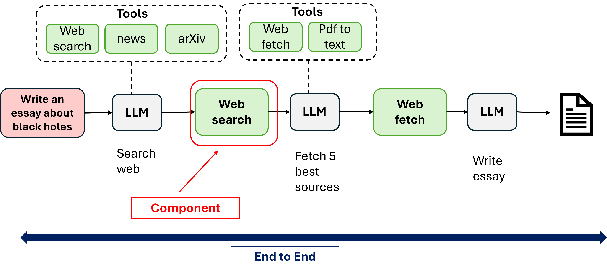
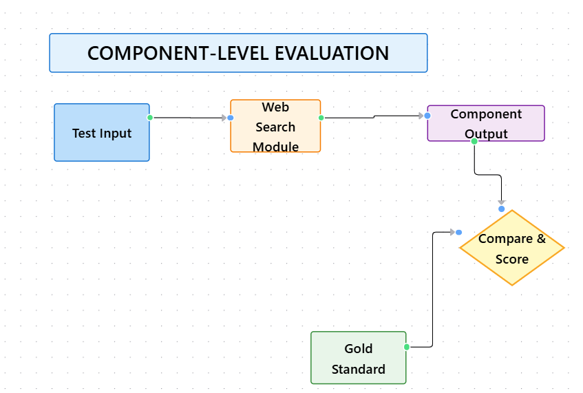
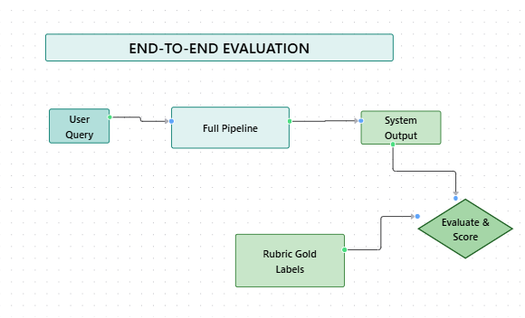

Module 4 — Episode 4
Training:Agentic AI Training
🎯 Learning Objectives
By the end of this episode, you will be able to:
- ✅ Explain what component-level evaluations (evals) are and why they are useful
- ✅ Design targeted evals to measure the performance of individual components in an agentic AI workflow
- ✅ Implement and interpret metrics to guide component-specific improvements efficiently
🧭 Overview
This episode introduces component-level evals — a method for evaluating the performance of individual components within a larger agentic AI system.
Instead of rerunning full end-to-end evaluations every time a small change is made, developers can isolate and test the performance of a single component (like a web search module).
This approach provides clearer performance signals, reduces noise from other components, and accelerates iteration cycles.
🧱 Prerequisites
Readers should already understand:
- The concept of end-to-end evals and their role in AI workflow validation
- The structure of agentic AI workflows (e.g., multi-component systems with search, reasoning, and synthesis modules)
- Basic familiarity with evaluation metrics such as precision, recall, and F1 score
🔑 Core Concepts
- Component-Level Eval – An evaluation focused on a single subsystem or component within a larger AI workflow. Its goal is to measure that component’s quality independently of the rest of the system.
- End-to-End Eval – A holistic evaluation of the entire workflow’s performance from input to final output.
- Gold Standard Resources – Expert-validated reference data used to benchmark the quality of a component’s output (e.g., authoritative web pages for search results).
- Signal Isolation – The process of reducing noise from unrelated components to better understand the true impact of changes in one part of the system.
🖼 Visual Explanation
   Caption:These diagrams show how component-level evaluations isolate individual modules for independent testing while end-to-end evaluations measure overall system performance.
⚙️ Technical Breakdown
How It Works
1. Identify the ComponentChoose a specific part of the workflow (e.g., web search, summarization, or reasoning).
2. Define Gold StandardsFor the selected component, create a set of expert-approved outputs.
Example: For a web search module, define a list of authoritative web pages relevant to specific queries.
3. Generate Component OutputsRun the component independently to produce results for each test case.
4. Compare Against Gold StandardsUse metrics such as precision, recall, or F1 score to quantify how closely the component’s output matches the gold standard.
5. Iterate and TuneAdjust parameters (e.g., search engine choice, number of results, date ranges) and re-run the component-level eval to measure incremental improvements.
6. Validate End-to-EndOnce satisfied with component-level performance, re-run a full system eval to confirm that improvements translate to overall performance gains.
Why It Works
- Reduces Evaluation Cost: Running end-to-end evals can be computationally and time expensive; component-level evals are faster and cheaper.
- Improves Signal Clarity: By isolating one component, developers can detect subtle improvements that might be masked by noise in the full system.
- Supports Parallel Development: Different teams can optimize their respective components independently, improving development velocity.
When To Use It
✅ Use component-level evals when:
- Tuning or replacing a specific subsystem (e.g., switching web search providers).
- Diagnosing performance issues localized to one part of the workflow.
- Iterating rapidly on a component before integrating it back into the full pipeline.
❌ Avoid relying solely on component-level evals when:
- You need to measure overall system performance or emergent behavior.
- The component’s performance is tightly coupled to other modules (e.g., reasoning depending on search context).
Trade-offs & Limitations
- Limited Context Awareness: Component-level evals may not capture downstream effects on other modules.
- Requires Gold Standard Data: Building reliable benchmarks can be time-consuming.
- Risk of Overfitting: Over-optimizing a component for its eval metric may not translate to better end-to-end results.
Performance Considerations
- Efficiency: Component-level tests can be run frequently, enabling faster feedback loops.
- Scalability: As systems grow, component evals help maintain performance visibility across modules.
- Noise Reduction: Isolating components reduces random variability from unrelated subsystems.
💻 Code Examples
Minimal Example
# Example: Component-level evaluation for a web search module
gold_standard = {
"what is agentic AI": {"https://example.com/agentic-ai-overview", "https://example.com/ai-agents"},
"how to fine-tune llms": {"https://example.com/fine-tuning-guide"}
}
def evaluate_search_component(search_fn, queries, gold_standard):
from sklearn.metrics import precision_score, recall_score, f1_score
all_precisions, all_recalls, all_f1s = [], [], []
for query in queries:
results = set(search_fn(query))
gold = gold_standard[query]
tp = len(results & gold)
fp = len(results - gold)
fn = len(gold - results)
precision = tp / (tp + fp + 1e-8)
recall = tp / (tp + fn + 1e-8)
f1 = 2 * precision * recall / (precision + recall + 1e-8)
all_precisions.append(precision)
all_recalls.append(recall)
all_f1s.append(f1)
return {
"precision": sum(all_precisions) / len(all_precisions),
"recall": sum(all_recalls) / len(all_recalls),
"f1": sum(all_f1s) / len(all_f1s)
}
# Example usage
results = evaluate_search_component(my_search_function, gold_standard.keys(), gold_standard)
print(results)
🧩 Key Takeaways
- Component-level evals provide fast, targeted, and interpretable feedback for improving specific modules.
- They help teams iterate efficiently without the overhead of full system testing.
- Always confirm improvements with a final end-to-end eval before deployment.
🚀 Next Steps
In the next episode, we’ll explore how to improve individual components once you’ve identified performance gaps through component-level evals.
File:module-4-episode-4-component-level-evals.md